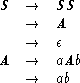
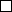
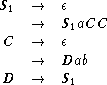
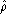
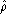
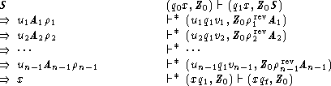
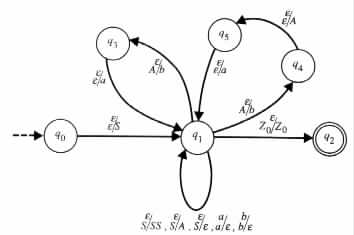
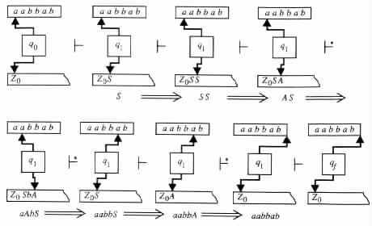
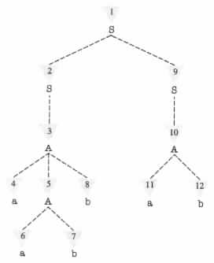
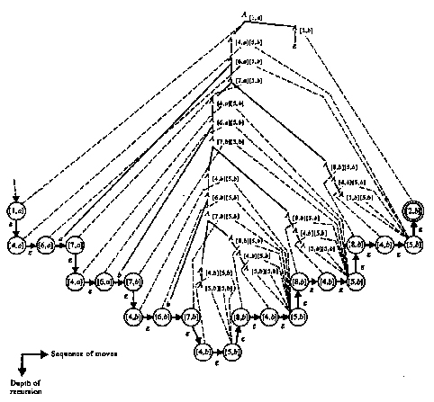

S2, modify P2 as follows.
S2, modify P2 as follows.
From Context-Free Grammars to Type 2 Grammars
From Context-Free Grammars to Pushdown Automata
From Context-Free Grammars to Recursive Finite-Domain Programs
From Recursive Finite-Domain Programs to Context-FreeGrammars
The Nonterminal Symbols of G
The Production Rules of G
L(G) is Contained in L(P)
L(P) is Contained in L(G)
Pushdown automata can be characterized by Type 2 grammars or, equivalently, by context-free grammars.
Specifically, a Type 0 grammar G = <N, S, P, S> is said to be context-free if each of its production rules has exactly one nonterminal symbol on its left hand side, that is, if each of its production rules is of the form A ® a.
The grammar is called context-free because it provides no mechanism to restrict the usage of a production rule A ® a within some specific context. However, in a Type 0 grammar such a restriction can be achieved by using a production rule of the form bAg ® bag to specify that A ® a is to be used only within the context of b and g.
The languages that context-free grammars generate are called context-free languages.
Example 3.3.1 The language { ai1bi1ai2bi2 · · · ainbin | n, i1, ¼ , in ³ 0 } is generated by the context-free grammar <N, S, P, S>, whose production rules are given below.


From Context-Free Grammars to Type 2 Grammars
Recall that a Type 2 grammar is a context-free grammar G = <N, S, P, S> in which A ® e in P implies that A = S and that no right-hand side of the production rules contains S. By the following theorem it follows that context-free grammars and Type 2 grammars act as "maximal" and "minimal" grammars for the same class of languages.
Theorem 3.3.1 Each context-free language is also a Type 2 language.
Proof Consider any context-free grammar G1 = <N, S, P1, S1>. A Type 2 grammar G2 = <N È {S2}, S, P2, S2> satisfies L(G2) = L(G1), if S2 is a new symbol and P2 is obtained from P1 in the following way.
Initialize P2 to equal P1 È {S2 ® S1}. Then, as long as P2 contains a production
rule of the form A ® e for some A S2, modify P2 as follows.
Similarly, no deletion of a production rule A ® e from P2 affects the generated
language, because each subderivation C Þ b1Ab2 Þ* g1Ag2 Þ g1g2 which uses
A ® e can be replaced with an equivalent subderivation of the form C Þ b1b2 Þ* g1g2.

Example 3.3.2 Let G1 be the context-free grammar whose production rules are listed below.

The construction in the proof of Theorem 3.3.1 implies the following equivalent grammars, where G2 is a Type 2 grammar.

From Context-Free Grammars to Pushdown Automata
Pushdown automata and recursive finite-domain programs process their inputs from left to right. To enable such entities to trace derivations of context-free grammars, the following lemma considers a similar property in the derivations of context-free grammars.
Lemma 3.3.1 If a nonterminal symbol A derives a string r of terminal symbols in a context-free grammar G, then r has a leftmost derivation from A in G.
Proof The proof is by contradiction. Recall that in context-free grammars the leftmost derivations r1 Þ r2 Þ · · · Þ rn replace the leftmost nonterminal symbol in each sentential form ri, i = 1, 2, ¼, n - 1.
The proof relies on the observation that the ordering in which the nonterminal symbols are replaced in the sentential forms is of no importance for the derivations in context-free grammars. Each nonterminal symbol in each sentential form is expanded without any correlation to its context in the sentential form.
Consider any context-free grammar G. For the purpose of the proof assume that a string r of terminal symbols has a derivation of length n from a nonterminal symbol A. In addition, assume that r has no leftmost derivation from A.
Let A Þ r1 Þ · · · Þ rm Þ · · · Þ rn = r be a derivation of length n in which A Þ r1 Þ · · · Þ rm is a leftmost subderivation. In addition, assume that m is maximized over the derivations A Þ* r of length n. By the assumption that r has no leftmost derivation from A, it follows that m < n - 1.
The derivation in question satisfies rm = wB m, rm+1 = wB
m, rm+1 = wB m+1, ¼ , rk = wB
m+1, ¼ , rk = wB k, rk+1 = wbk
for some string w of terminal symbols, production rule B ® b, m < k < n, and
k, rk+1 = wbk
for some string w of terminal symbols, production rule B ® b, m < k < n, and  m, ¼ ,
m, ¼ ,  k. Thus
A Þ r1 Þ · · · Þ rm-1 Þ rm = wB
k. Thus
A Þ r1 Þ · · · Þ rm-1 Þ rm = wB m Þ wb
m Þ wb m Þ wb
m Þ wb m+1 Þ · · · Þ wb
m+1 Þ · · · Þ wb k = rk+1 Þ · · · Þ rn = r
is also a derivation of r from A of length n.
k = rk+1 Þ · · · Þ rn = r
is also a derivation of r from A of length n.
However, in this new derivation A Þ r1 Þ · · · Þ rm Þ wb m is a leftmost
subderivation of length m + 1. Consequently, contradicting the existence of a maximal m
as implied above, from the assumption that r has only nonleftmost derivations from
A.
m is a leftmost
subderivation of length m + 1. Consequently, contradicting the existence of a maximal m
as implied above, from the assumption that r has only nonleftmost derivations from
A.
As a result, the assumption that r has no leftmost derivation from A is also
contradicted.
The proof of the following theorem shows how pushdown automata can trace the derivations of context-free grammars.
Theorem 3.3.2 Each context-free language is accepted by a pushdown automaton.
Proof Consider any context-free grammar G = <N, S, P, S>. With no loss of generality assume that Z0 is not in N È S. L(G) is accepted by the pushdown automaton M = <Q, S, N È S È {Z0}, d, q0, Z0, {qf}> whose transition table d consists of the following derivation rules.
The transition rule in (a) is used for pushing the first sentential form S into the pushdown store. The transition rules in (b) are used for replacing the leftmost nonterminal symbol in a given sentential form with the right-hand side of an appropriate production rule. The transition rules in (c) are used for matching the leading terminal symbols in the sentential forms with the corresponding symbols in the given input x. The purpose of the production rule in (d) is to move the pushdown automaton into an accepting state upon reaching the end of a derivation.
By induction on n it can be verified that x has a leftmost derivation in G if and only if M has an accepting computation on x, where the derivation and the computation have the following forms with uivi = x for 1 £ i < n.


Example 3.3.3 If G is the context-free grammar of Example 3.3.1, then the language L(G) is accepted by the pushdown automaton M, whose transition diagram is given in Figure 3.3.1(a).

(a)

(b)
|
aabbab has the leftmost derivation S Þ SS Þ AS Þ aAbS Þ aabbS Þ aabbA Þ aabbab
in G. Figure 3.3.1(b) shows the corresponding configurations of M in its computation on
such an input.
From Context-Free Grammars to Recursive Finite-Domain
Programs
By Theorems 3.2.1 and 3.3.2 each context-free language is accepted by a recursive finite-domain program. For a given context-free grammar G = <N, S, P, S>, the recursive finite-domain program T that accepts L(G) can be of the following form.
T on a given input x nondeterministically traces a leftmost derivation that starts at S. If the leftmost derivation provides the string x, then T accepts its input. Otherwise, T rejects the input.
T has one procedure for each nonterminal symbol in N, and one procedure for each terminal symbol in S. A procedure that corresponds to a nonterminal symbol A is responsible for initiating a tracing of a leftmost subderivation that starts at A. The procedure does so by nondeterministically choosing a production rule of the form A ® X1 · · · Xm, and then calling the procedures that correspond to X1, ¼ , Xm in the given order. On the other hand, each procedure that corresponds to a terminal symbol is responsible for reading an input symbol and verifying that the symbol is equal to its corresponding terminal symbol.
Each of the procedures above returns the control to the point of invocation, upon successfully completing the given responsibilities. However, each of the procedures terminates the computation at a nonaccepting configuration upon determining that the given responsibility cannot be carried out.
The main program starts a computation by invoking the procedure that corresponds to the start symbol S. Upon the return of control the main program terminates the computation, where the termination is in an accepting configuration if and only if the remainder of the input is empty.
The recursive finite-domain program T can be as depicted in Figure 3.3.2.
Example 3.3.4 If G is the context-free grammar of Example 3.3.1, then L(G) is accepted by the recursive finite-domain program in Figure 3.3.3.
|
On input aabbab the recursive finite-domain program traces the derivation
S Þ SS Þ AS Þ aAbS Þ aabbS Þ aabbA Þ aabbab by calling its procedures in the
order indicated in Figure 3.3.4.
|

|
From Recursive Finite-Domain Programs to Context-Free
Grammars
A close look at the proof of Theorem 2.3.2 indicates how a given finite-memory program P can be simulated by a Type 3 grammar G = <N, S, P, S>.
The grammar uses its nonterminal symbols to record the states of P. Each production rule of the form A ® aB in the grammar is used to simulate a subcomputation of P that starts at the state recorded by A, ends at the state recorded by B, and reads an input symbol a. However, each production rule of the form A ® a in the grammar is used to simulate a subcomputation of P that starts at the state that is recorded by A, ends at an accepting state, and reads an input symbol a. The start symbol S of G is used to record the initial state of P. The production rule S ® e is used to simulate an accepting computation of P in which no input value is read.
The proof of the following theorem relies on a similar approach.
Theorem 3.3.3 Every language that is accepted by a recursive finite-domain program is a context-free language.
Proof Consider any recursive finite-domain program P. With no loss of generality it can be assumed that the program has no write instructions. The language that is accepted by P can be generated by a context-free grammar G that simulates the computations of P. The nonterminal symbols of G are used to indicate the start and end states of subcomputations of P that have to be simulated, and the production rules of G are used for simulating transitions between states of P.
Specifically, the nonterminal symbols of G consist of
The start symbol of G is the nonterminal symbol Aq0 that corresponds to the initial state q0 of P.
The production rules of G consist of
A production rule of the form Aq ® aAr replaces the objective of reaching an accepting state from state q with the objective of reaching an accepting state from state r.
A production rule of the form Aq,p ® aAr,p replaces the objective of reaching state p from state q with the objective of reaching state p from state r.
Each of the production rules above is used for terminating a successful simulation of a subcomputation performed by an invoked procedure.
A proof by induction can be used to show that the construction above implies L(G) = L(P).
To show that L(G), is contained in L(P) it is sufficient to show that the following two conditions hold for each string a of terminal symbols.
The proof can be by induction on the number of steps i in the derivations. For i = 1, the only feasible derivations are those that have either the form Aq Þ e or the form Ap,p Þ e. In the first case q corresponds to an accept instruction, and in the second case p corresponds to a return instruction. In both cases the subexecution sequences of the program are empty.
For i > 1 the derivations must have either of the following forms.
To show that L(P) is contained in L(G) it is sufficient to show that either of the following conditions holds for each subexecution sequence that reads a, starts at state q, ends at state p, and has at least as many executions of return instructions as of call instructions in each of the prefixes.
For i > 0 either of the following cases must hold.
Consequently, by definition, the grammar G has a production rule of the form Aq ® a1Ar if p is an accepting state, and a production rule of the form Aq,p ® a1Ar,p if p corresponds to a return instruction.
However, by the induction hypothesis the i-1 moves that start in state r have in G a corresponding derivation of the form Ar Þ* a2 if p is an accepting state, and of the form Ar,p Þ* a2 if p corresponds to a return instruction. a2 is assumed to satisfy a1a2 = a.
Consequently, by definition, the grammar G has a production rule of the form Aq ® Ar,sAt if p is an accepting state, and a production rule of the form Aq,p ® Ar,sAt,p if p corresponds to a return instruction.
However, by the induction hypothesis, the grammar G has a derivation of the
form Ar,s Þ* a1 for the input a1 that the subexecution sequence consumes
between states r and s. In addition, G has either a derivation of the form
At Þ* a2 or a derivation of the form At,p Þ* a2, respectively, for the input
a2 that the subexecution sequence consumes between states t and p, depending
on whether p is an accepting state or not.
Example 3.3.5 Let P be the recursive finite-domain program in Figure 3.3.5(a), with {a, b} as a domain of the variables and a as initial value.
![A[1,a] ® A[4,a] A[4,b],[5,a] ® A[5,b],[5,a]
® A[4,a],[5,a]A[2,a] ® A[6,b],[5,a]
® A[4,a],[5,b]A[2,b] A[4,b],[5,b] ® A[5,b],[5,b]
A[2,a] ® e ® A[6,b],[5,b]
® A[3,a] A[5,a],[5,a] ® e
A[2,b] ® e A[5,b],[5,b] ® e
® A[3,b] A[6,a],[5,a] ® aA[7,a],[5,a]
A[4,a] ® A[5,a] ® bA[7,b],[5,a]
® A[6,a] A[6,a],[5,b] ® aA[7,a],[5,b]
A[4,b] ® A[5,b] ® bA[7,b],[5,b]
® A[6,b] A[6,b],[5,a] ® aA[7,a],[5,a]
A[6,a] ® aA[7,a] ® bA[7,b],[5,a]
® bA[7,b] A[6,b],[5,b] ® aA[7,a],[5,b]
A[6,b] ® aA[7,a] ® bA[7,b],[5,b]
® bA[7,b] A[7,a],[5,a] ® A[4,a],[5,a]A[8,a],[5,a]
A[7,a] ® A[4,a],[5,a]A[8,a] ® A[4,a],[5,b]A[8,b],[5,a]
® A[4,a],[5,b]A[8,b] A[7,a],[5,b] ® A[4,a],[5,a]A[8,a],[5,b]
A[7,b] ® A[4,b],[5,a]A[8,a] ® A[4,a],[5,b]A[8,b],[5,b]
® A[4,b],[5,b]A[8,b] A[7,b],[5,a] ® A[4,b],[5,a]A[8,a],[5,a]
A[8,b] ® A[4,b] ® A[4,b],[5,b]A[8,b],[5,a]
A[4,a],[5,a] ® A[5,a],[5,a] A[7,b],[5,b] ® A[4,b],[5,a]A[8,a],[5,b]
® A[6,a],[5,a] ® A[4,b],[5,b]A[8,b],[5,b]
A[4,a],[5,b] ® A[5,a],[5,b] A[8,b],[5,a] ® A[4,b],[5,a]
® A[6,a],[5,b] A[8,b],[5,b] ® A[4,b],[5,b]](theory-bk-three37x.gif)
|
L(P) is generated by the grammar G, which has the production rules in Figure 3.3.5(b). [i, x] denotes a state of P that corresponds to the instruction segment Ii, and value x in x.
The derivation tree for the string abb in the grammar G, and the corresponding
transitions between the states of the program P on input "a, b, b", are shown in Figure 3.3.6.
The symbol A[1,a] states that the computation of P has to start at state [1, a] and end at an
accepting state. The production rule A[1,a] ® A[4,a][5,b]A[2,b] corresponds to a call to f
which returns the value b.
|

|
Context-free grammars do not resemble pushdown automata, the way Type 3 grammars resemble finite-state automata. The difference arises because derivations in context-free grammars are recursive in nature, whereas computations of pushdown automata are iterative.
Consequently, some context-free languages can be more easily characterized by context-free grammars, and other context-free languages can be more easily characterized by pushdown automata.

 or /* For each production rule of the form
A ® X1 · · · Xm. */
call X1() · · · call Xm()
return
or
or /* For each production rule of the form
A ® X1 · · · Xm. */
call X1() · · · call Xm()
return
or
 until true
end
procedure a() /* For each terminal symbol a. */
read symbol
if symbol = a then return
reject
end
until true
end
procedure a() /* For each terminal symbol a. */
read symbol
if symbol = a then return
reject
end